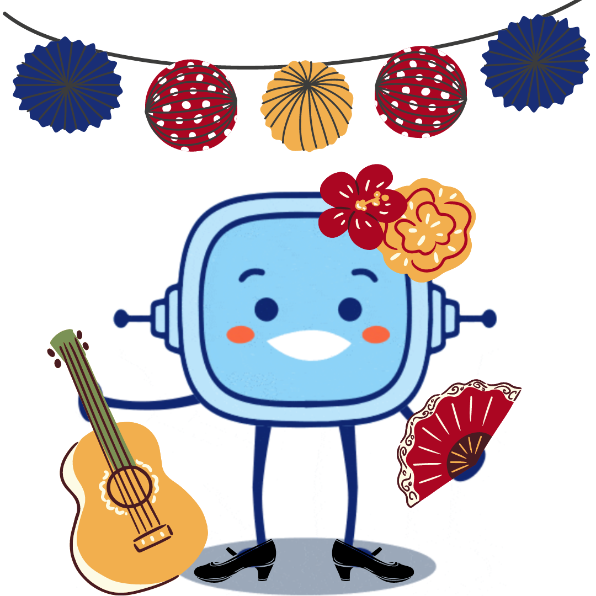

Seguro que te gusta disfrutar de la feria de Vejer de la Frontera.
Pero, ¿has pensado alguna vez en diseñar una caseta?
¿Crees que con las Matemáticas se puede trabajar en el diseño y organización de una caseta de feria?
Ya verás como todo se puede entender mejor con un poco de Geometría.
¡Vamos a ponernos manos a la obra para diseñar una caseta y conseguiremos hacer una maqueta para dar a conocer nuestro trabajo!
REA Construye tu caseta de feria (CC BY-NC-SA)
Con el trabajo de toda la clase podremos tener una idea de diferentes combinaciones y realizaremos al finalizar la tarea un concurso para elegir los. mejores diseños.


.png "Objetivos REA 6 Matemáticas")